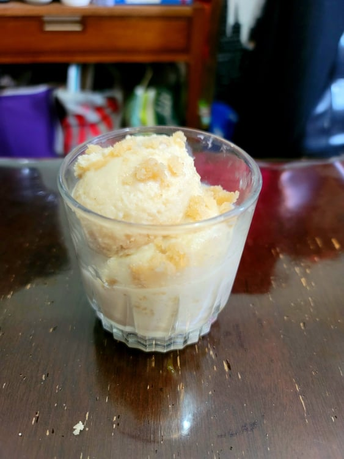

Halva Ice Cream

Ingredients:
- 2 cups Heavy cream
- 1 cup Milk
- 3/4 cup Sugar
- 2/3 cup Tahini
- 1 tsp Vanilla extract
- 1/4 tsp Salt
- Optional: 4 oz Halva candy, crumbled
Instructions:
- Place the heavy cream, milk, and sugar into a large pot. Heat over medium while stirring until the sugar dissolves completely. Remove from heat and transfer to a bowl.
- Mix in the tahini, vanilla extract, and salt. Place into a fridge and let chill completely, prefferably overnight.
- Once chilled, churn in an ice cream maker until soft serve consistency, about 40-60 minutes. If using, add in the halva a couple minutes before done churning. Then transfer to a sealable container and let freeze in a freezer. Serve sprinkled with more crumbled halva candy.